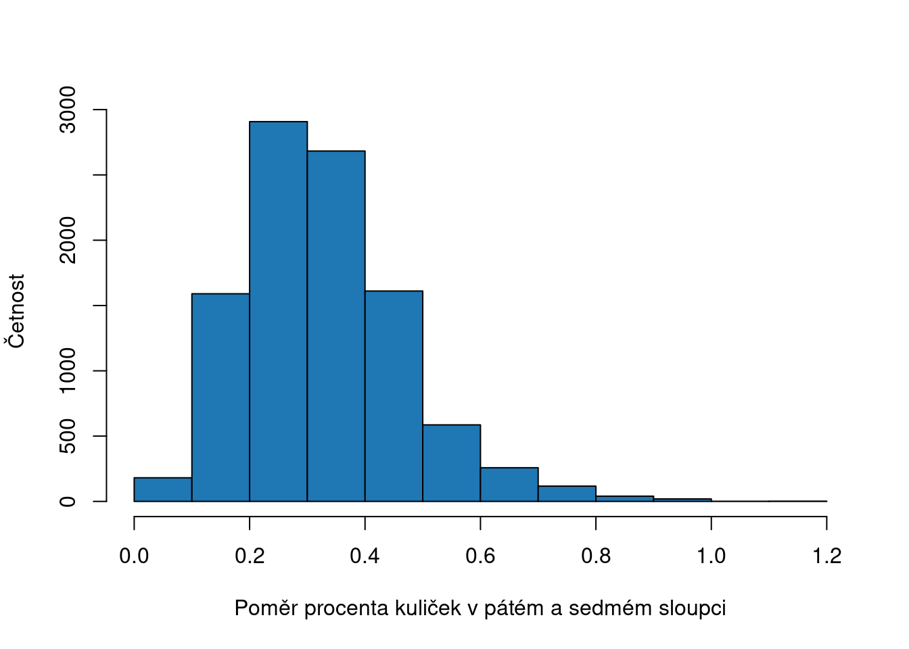
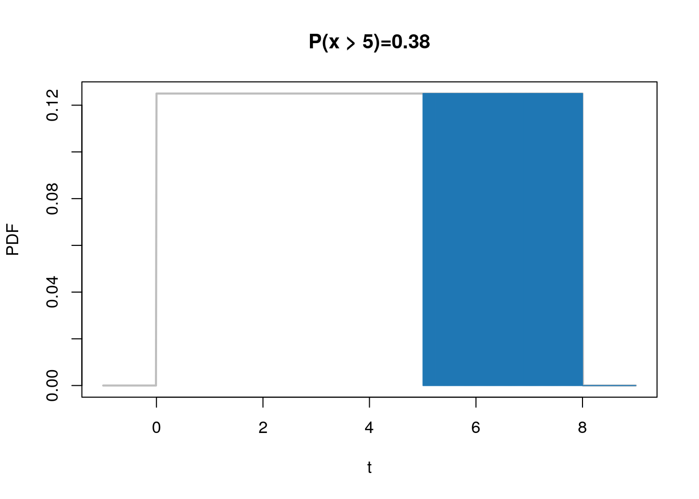

Kapitola 3 Popisná statistika old
Klíčové pojmy:
- popisná x inferenční statistika
- absolutní a relativní četnost
- mód, medián, průměr
- rozptyl, směrodatná odhylka
V této přednášce se budeme věnovat popisné statistice. Statistika popisná nám popisuje nějaký soubor čísel. Například, kolik pozorujeme na určitém cvičení Úvodu do statistiky žen a mužů. Statistika inferenční nám pak pomáhá na základě naměřených dat dělat úsudky o celé populaci studentů statistiky, tedy včetně cvičení, které jsme přímo neměřili.
Úkolem popisné statistiky je shrnout informace o našem výběru do pár čísel, které nám pomohou pochopit jaké má náš výběr vlastnosti. Hlavními vlastnostmi, které nás zajímají je:
Jakáje typická hodnota měřené proměnné
Na kolik se liší hodnoty jendotlivých pozorování (jak jsou rozptýlené)
Výběr popisné statistiky záleží na typu proměnné, kterou měříme. Z předchozí přednášky víme, že existují 3 typy proměnných: 1) Nominální 2) Ordinální 3) Kardinální
Dále víme, že nominální proměnné nemůžeme seřadit, ordinální můžeme seřadit a kardinální můžeme seřadit a zároveň říci o kolik je nějaká hodnota větší než jiná.
3.1 Nominální proměnná
Příkladem nominální promněnné je například barva. Vezměme si například situaci, v kterém bychom zjišťovali informace o barvě auta na nějakém konkrétním parkovišti. Na parkovišti parkuje 100 aut. Všechna auta bychom obešli a barvu zaznamenali. Jaký je nejlepší způsob, jak se něco dozvědět o všech 100 autech? Mohli bychom si všechny barvy přečíst a snažit se je zapomatovat tak. To by ale bylo obtížné. A právě proto na to nám slouží popisná statistika. Pomocí jednoho čísla můžeme vystihnout nejpočetnější barvu. Takové popisné statistice říkáme modus.
set.seed(42)
barvy <- c("cervena", "stribrna", "zelena", "zluta", "bila")
barvy_aut <- sample(barvy, size = 100, replace = TRUE)
# vytvorime tabulku relativnich cetnosti
tabulka <- table(barvy_aut)
print(tabulka)## barvy_aut
## bila cervena stribrna zelena zluta
## 24 20 25 11 20# vratime nazev kategorie, ktera se vyskytuje nejcasteji
names(tabulka)[which.max(tabulka)]## [1] "stribrna"Protože budeme modus počítat dále, vytvoříme si funkci, která bude výpočet provádět.
modus <- function(x) {
t <- table(x)
return (names(t)[which.max(t)])
}3.2 Ordinální proměnná
U ordinální proměnné, stejně jako u nominální, nemůžeme vypočítat o kolik je nějaká hodnota větší než druhá. Můžeme ale hodnoty seřadit. Toho se využívá k vypočítání popisné statistiky zvané medián. Medián nám značí prostžední hodnotu nějaké proměnné. Můžete si pro představit tak, že hodnoty proměnné seřadíte od nejmenší po největší a vyberete hodnotu, která bude přesně uprostřed. No a tato hodnota je medián. Matematicky se medián u proměnné \(x\) vypočítá jako \(median(x) = x_{(n + 1)/2}\). Pokud má naše proměnná sudý počet čísel, vypočítá se medián zpravidla jako průměr dvou prostředních hodnot, tedy \(median(x) = \frac{x_{n/2} + x_{n/2+1}}{2}\). Ukážeme si její výpočet na příkladu vzdělání. V našich datech máme 3 stupně vzdělání - zš, sš a vš. Nasimulume příklad, v kterém budeme mít 9 dat.
n <- 13
vzdelani <- c("zs", "ss", "vs")
vzdelani_vyber <- sample(vzdelani, size = n, replace = TRUE)
#udelame z character faktor (abychom mohli mit serazene hodnoty)
vzdelani_vyber <- factor(x = vzdelani_vyber, levels = vzdelani)
vzdelani_vyber <- sort(vzdelani_vyber)
print(paste0("Typ promenne, po prevedeni na factor: ", class(vzdelani_vyber)))## [1] "Typ promenne, po prevedeni na factor: factor"print(vzdelani_vyber)## [1] zs zs zs zs zs ss ss ss vs vs vs vs vs
## Levels: zs ss vs# vypocitame median
indx <- (n + 1) / 2
median_vzdelani <- sort(vzdelani_vyber)[indx]
print(paste0("Medián vzdělání je: ", median_vzdelani))## [1] "Medián vzdělání je: ss"Samozřejmě můžeme u ordinálních proměnných počítat také mód.
print(paste0("Modus proměnné je: ", modus(vzdelani_vyber)))## [1] "Modus proměnné je: zs"Jak si asi pamatujete z předchozího semestru, u různých proměnných jsme počítali relativní četnosti (četnost je počet pozorování učité hodnoty. Relativní četnost potom počet pozorování děleno počet případů celkem). Například jsme počítali relativní četnost výsledků hodů mincí. Výsledky hodu mincí jsou také nominální proměnnou. Další statistikou, kterou můžete u nominálních a ordinálních proměnných spočítat jsou tedy četnosti. Ty nám řeknou více o rozložení hodnot v proměnné. Pojďme si takový příklad ukázat na našem vzorku se vzděláním.
#absolutni cetnost
absolutni_cetnost <- table(vzdelani_vyber)
#relativni cetnost
relativni_cetnost <- table(vzdelani_vyber) / length(vzdelani_vyber)knitr::kable(relativni_cetnost, caption = "Relativní četnost kategorie vzdělání")| vzdelani_vyber | Freq |
|---|---|
| zs | 0.3846154 |
| ss | 0.2307692 |
| vs | 0.3846154 |
Nejčastějším způsobem zobrazení četností je sloupcový graf (bar plot).
barplot(table(vzdelani_vyber),
main = "Sloupcový graf proměnné vzdělání",
ylab = "Četnost",
col = "#1f77b4")
Graf 3.1: Sloupcový graf proměnné vzdělání - absolutní četnost
barplot(table(vzdelani_vyber) / length(vzdelani_vyber),
main = "Sloupcový graf proměnné vzdělání",
ylab = "Relativní četnost",
col = "#1f77b4")
Graf 3.2: Sloupcový graf proměnné vzdělání - relativní četnost
3.3 Kardinální proměnná
Kardinální proměnná nám umožňují seřadit hodnoty a říci o kolik jsou větší. Kardinální proměnné jsou tedy číselné. Rozlišujeme mezi diskrétní a spojitou. Diskrétní nabývá celých čísel (1,2,3,4 etc., například počet dětí), tedy \(\in Z\). Spojitá proměnná pak teoreticky nebývá nekonečně mnoho hodnot, prakticky je ale omezena tím, jak přesně dokážeme danou metriku měřit. Platí ale, že spojité proměnné nabývají racionálních čísel, tedy \(\in R\). Stejně jako u ordinální proměnné, můžeme vypočítat modus a medián. Další popisnou statistikou, která nám prozradí něco o velikosti hodnot vnašich datech je průměr. Průměr proměnné \(x\) vypočítáme jako \(\overline{x} = \frac{1}{n}\sum_{i=1}^{n} x_i\). Pojďme si ukázat, jak průměr vypočítat na datech o počtu dětí.
rodiny <- c(2,2,2,2,2,1,1,1,3,3,4,0)
pocet_deti <- sample(rodiny, size = 1000, replace = TRUE)
prumer <- sum(pocet_deti) / length(pocet_deti)
print(paste0("Průměr proměnné počet dětí je :", prumer))## [1] "Průměr proměnné počet dětí je :1.951"Můžeme také požít funckci mean
print(paste0("Průměr pomocí funkce mean :", mean(pocet_deti)))## [1] "Průměr pomocí funkce mean :1.951"Pojďme si ještě vypočítat modus a medián. U číselných proměnných (numeric) můžeme k výpočtu mediánu použít funkci median.
print(paste0("Modus proměnné počt dětí je: ", modus(pocet_deti)))## [1] "Modus proměnné počt dětí je: 2"print(paste0("Median proměnné počt dětí je: ", median(pocet_deti)))## [1] "Median proměnné počt dětí je: 2"Někdy nechceme všem pozorováním při výpočtu průměru dát stejnou váhu. V takovém případě vypočítáme vážený průměr. Jeho vzorec je \(\overline{x} = \frac{\sum_{i=1}^{n} w_ix_i}{\sum_{i=1}^{n}w_i}\). Pokud bychom například měli pouze informace o četnosti počtu dětí, tedy:
print(table(pocet_deti))## pocet_deti
## 0 1 2 3 4
## 81 237 418 178 86nebylo by průměrný počet dětí v datech možné vypočítat pomocí \(\overline{x} = (0+1+2+3+4) / 5\), protože v datech nemáme stejný počet rodin s 0 dětmi, 1 dítětem apod. Musíme jednotlivým hodnotám dát jinou váhu \(w_i\) podle toho, kolik jich je v našich datech. V R bychom takovýto vážený průměr mohli vypočítat jako
w <- table(pocet_deti)
# prevedeme hodnoty 0,1,2,3,4 do numericke promenne,
# abychom mohli nasobit a scitat
x_i <- as.numeric(names(table(pocet_deti)))
vazeny_prumer <- sum(w * x_i) / sum(w)
print(paste0("Vážený průměr je: ", vazeny_prumer))## [1] "Vážený průměr je: 1.951"Cože je stejné číslo, jaké jsme dostali, když jsme měli k dispozici všech 1000 pozorování proměnné.
U kardinálních spojitých proměnných používáme k vizuálnímu ověření rozložení hodnot proměnné histogram. Histogram je jako sloupcový graf absolutních/relativních četností. Protože u spojitých proměnných neexistuje přirozená hranice pro sloupec, funkce hist vytvoří základní hranice pro sloupce. Ty ale můžete upravit pomocí argumentu breaks.
hist(pocet_deti, breaks = c(0,1,2,3,4,5), probability = TRUE,
xlab = "Počet dětí",
ylab = "Relativní četnost",
main = "Histogram poštu děti",
col = "#1f77b4")
Jak jsme uvedli na začátku, úkolem popisné statistiky není pouze přiblížit, jak vypadá typická hodnota naší proměnné, ale také přiblížit, jak jsou od sebe odlišné. K tomu nám slouží metrika, kterou nazýváme rozptyl. Rozptyl vypočítáme tak, že každou hodnotu odečteme od průměru a umocníme. Tyto hodnoty sečteme a vydělíme počtem pozorování. Matematicky bychom rozptyl \(\sigma^2\) proměnné \(x\) vypočítali jako \(\sigma^2 = \frac{1}{n}\sum_{i=1}^n (x_i - \overline{x})^2\). Ve statistice se také používá pro výpočet rozptýlenosti směrodatná odchylka \(\sigma\), které se vypočítá jako \(\sigma = \sqrt{\sigma^2}\) Pojďme vypočítat rozptyl a směrodatnou odchylku u naší proměnné počet dětí.
vzdalenost_od_prumeru <- (pocet_deti - mean(pocet_deti))^2
rozptyl <- sum(vzdalenost_od_prumeru) / length(pocet_deti)
smerodatna_odchylka <- sqrt(rozptyl)
print(paste0("Rozptyl je:", rozptyl))## [1] "Rozptyl je:1.080599"print(paste0("Směrodatná odchylka je:", smerodatna_odchylka))## [1] "Směrodatná odchylka je:1.03951863860154"V R můžeme roztyl a směrodatnou odchylku vypočítat pomocí funkcí var a sd. Vzorec, který se v R používá počítá výběrový roztyl a směrodatnou odchylku, ve jmenovateli tedy používá \(n - 1\). Rozdíl v těchto přístupech teď není důležitý a ukážeme si ho na dalších cvičeních. Uvádíme ho zde jenom, abychom rozuměli proč jsu výsledky jiné než ty, které jsme spočítali my.
print(paste0("Rozptyl pomocí funkce var je:", var(pocet_deti)))## [1] "Rozptyl pomocí funkce var je:1.08168068068068"print(paste0("Směrodatná odchylka pomoci funkce sd je:", sd(pocet_deti)))## [1] "Směrodatná odchylka pomoci funkce sd je:1.04003878806546"Ukažme si princip rozptylu/směrodatné odchylky na imaginárních datech. Na ukázku si vytvoříme proměnnou, která má 10 pozorování a zobrazíme je do grafu jako body. Červená čára označuje průměr těchto bodů. Horizontální čáry potom označují vzdálenost každého pozorování od průměrné hodnoty. Nejdříve si ukážeme příklad s menším rozptylem hodnot a pod ním příklad rozložení s větším rozptylem hodnot. Protože mají oba příklady stejný počet pozorování (10), můžete si rozdíl v jejich rozptylu představit jako rozdíl jejich
par(mfrow = c(2,1))
x <- rnorm(10, 5, sd = 1)
prumer <- mean(x)
n <- seq(1, length(x))
smerodatna_odchylka <- sum((x - mean(x))^2) / (length(x))
plot(x, n,
main = paste0("Směrodatná odchylka: ", round(smerodatna_odchylka, 2)),
xlim = c(0,10),
xlab = "", ylab = "Číslo pozorovaní",
pch = 19,
col = "#1f77b4")
abline(v = prumer, col = "red")
for(i in n) {
lines(c(prumer, x[i]), c(i,i), col = "#1f77b4")
}
legend("topright",
legend = c("Průměr", "Vzdal. od průměru"),
col = c("red", "#1f77b4"),
lty = c(1,1), cex = 0.7)
x2 <- rnorm(10,5, sd = 2)
prumer <- mean(x2)
n <- seq(1, length(x2))
smerodatna_odchylka <- sum((x2 - mean(x2))^2) / (length(x))
plot(x2, n,
main = paste0("Směrodatná odchylka: ", round(smerodatna_odchylka, 2)),
xlim = c(0,10),
xlab = "", ylab = "Číslo pozorovan9",
pch = 19,
col = "#1f77b4")
abline(v = prumer, col = "red")
for(i in n) {
lines(c(prumer, x2[i]), c(i,i), col = "#1f77b4")
}
legend("topright",
legend = c("Průměr", "Vzdal. od průměru"),
col = c("red", "#1f77b4"),
lty = c(1,1), cex = 0.7)
Zkuste si zobrazit histrogram obou proměnných, abyste si udělali lepší představu o tom, jak vypadá jejich rozložení.